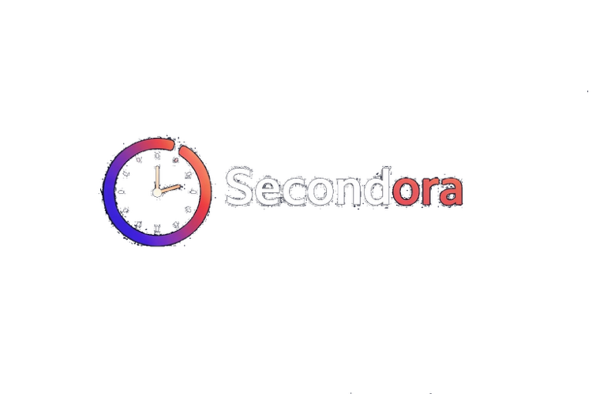

Secondora is a simple and fast online countdown timer designed for focus, study sessions, productivity and everyday time management.
The goal of this project is to provide a clean and distraction-free timer that works instantly in any browser without downloads or registrations.
Many online timers are overloaded with unnecessary features. Secondora focuses on speed, simplicity and clarity so you can start your focus session immediately.
Whether you are studying for exams, practicing the Pomodoro technique, working on a task or exercising, Secondora helps you stay focused by making time management simple and accessible.
If you have questions, suggestions or feedback, feel free to visit our Contact page.